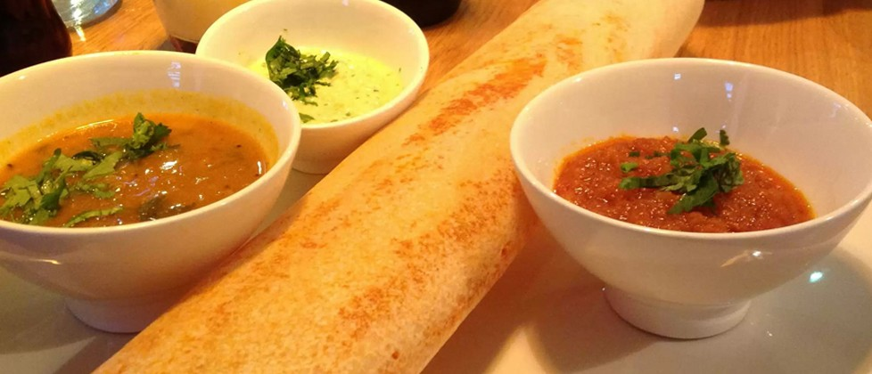
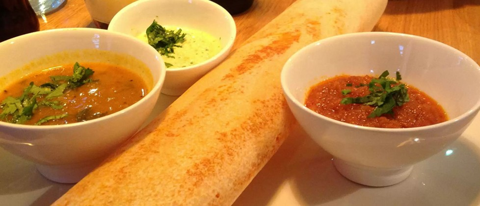

Chandh Palace is a coastal town in southern India which is famous for Hindu temples built centuries ago. It is also known for its delicious vegetarian cuisine.
Thousands of tourists from all over the world visit Chandh Palace to see the beauty of the old temples and to taste the authentic Southern Indian vegetarian cuisine.
Eventually, people started opening Chandh Palace restaurants throughout Asia, Europe, and now all over the world. The lord 'Krishna' is worshipped among many Indian Gods by the people who live in Chandh Palace.
"All of our food is natural and freshly prepared daily on the premises. No additives are used."
Pure Vegetarian Catering is available for weddings, birthdays, anniversaries and other special occasions. Please get manager's assistance for more details.
View details »
 
